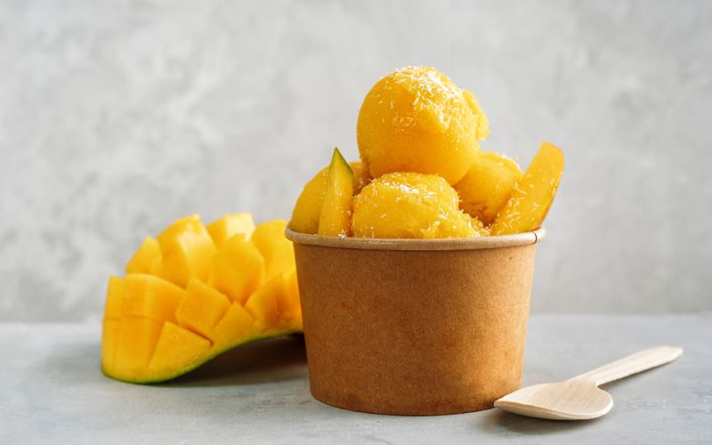

Vanilla Ice Cream
Creamy homemade vanilla ice cream with real vanilla bean.
- Whisk cream, milk, sugar, and vanilla together.
- Churn in an ice cream maker until thick.
- Freeze for 2-4 hours before serving.
- Serve with toppings or on its own.
More Info
Video

Mango Sorbet
Refreshing tropical mango sorbet with just 3 ingredients.
- Blend fresh mango, sugar, and lemon juice.
- Churn or freeze in a container, stirring every hour.
- Freeze solid and scoop when ready.
- Garnish with mint if desired.
More Info
Video

Frozen Yogurt Parfait
Layers of frozen yogurt, granola, and fruit.
- Spoon frozen yogurt into a glass.
- Add layers of granola, berries, and honey.
- Repeat layers and top with nuts or coconut.
- Serve immediately while still frozen.
More Info
Video